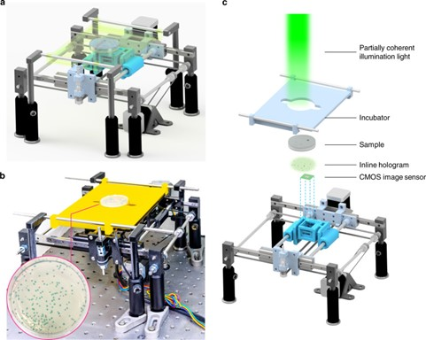
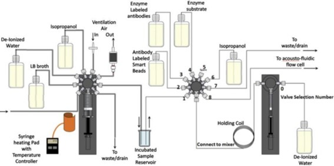

Contexto Científico
Presentamos los siguientes artículos científicos:

Detección temprana y clasificación de bacterias vivas utilizando time-lapse coherent imaging y deep learning [18].
Debido a lo invasivo de las pruebas de diagnóstico para la La identificación temprana de bacterias patógenas en alimentos, agua y fluidos corporales es Leer más...

Detección de bacterias en agua con nanopartículas magnéticas recubiertas de β-galactosidasa [19]
La contaminación patógena y las infecciones bacterianas resistentes siguen siendo preocupaciones críticas tanto en los países desarrollados como en desarrollo Leer más...

WaterSpy: A High Sensitivity, Portable Photonic Device for Pervasive Water Quality Analysis[19]
El artículo presenta un dispositivo fotónico innovador, compacto y rentable para la detección generalizada de la calidad del agua, que opera en el rango espectra IR medio. Leer más...